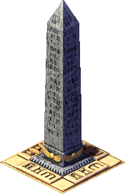

Obelisk

The Obelisk is a granite monument commemorating deeds and achievements. Unlike pyramids and mastabas, all granite must already sit in staffed Storage Yards before you can place the site — after placement the stone is set at once, then carpenters raise scaffolding and stonemasons carve the faces.
You do not need Work Camp peasants. Only one unfinished obelisk (small or large) may be under construction at a time.
Source summary adapted from Impressions Games Fandom — Obelisk and Pharaoh Heaven monuments chart.
Small
- Cost (Normal)
- 2 500 Db
- Cost by difficulty
- VE 1 500 · Easy 2 000 · Normal 2 500 · Hard 3 500 · VH 5 000
- Art stages
- 4 (a–d)
Large
- Cost (Normal)
- 5 000 Db
- Cost by difficulty
- VE 3 000 · Easy 4 000 · Normal 5 000 · Hard 7 000 · VH 10 000
- Art stages
- 6 (a–f)
- Materials
- Granite (pre-stock in staffed SY) · Timber (scaffolding)
- Guilds
- Carpenters · Stonemasons
- Labor
- Guild craftsmen only — no Work Camp
- Fire / damage
- Fireproof · damage-proof
Overview
Obelisks are single buildings (no linked parts). Granite amount required to place comes from each building’s JS placement_resources — currently 100 for small and 200 for large. Storage Yards that hold that granite must have workers (num_workers > 0); empty yards do not count toward the pre-stock check, and granite is removed only from staffed yards on place.
Under the current additive rating formula, one finished small obelisk (weight 2) yields monument rating 9 — the goal used on Buhen.
timber_loads in
src/scripts/building/obelisk.js (tune without C++ rebuild;
current values are working defaults pending original .pak calibration).
Large granite (200 vs some charts’ 300) is likewise config-only via placement_resources.
Integral test 44_obelisk_place covers staffed-SY place + granite consume +
__test_monument_add_resource. Visual polish (ladder offset) still open.
Construction
- Accumulate granite in staffed Storage Yards (≥ amount from the building config).
- Place when the ghost footprint is all green. Granite is deducted immediately; the monument appears at stage a.
- Carpenters’ Guild + timber build scaffolding (early phases).
- Stonemasons’ Guild carve hieroglyphs through remaining art stages.
- Finished — contributes its monument weight to the city rating.
| Size | Footprint | Granite to place | Art packs | Weight |
|---|---|---|---|---|
| Small | 3×3 | 100 | obelisk3x3a…d | 2 |
| Large | 5×5 | 200 | obelisk5x5a…f | 4 |
Scaffolding ornament uses obelisk_extra image id 1 (ladder). Work Camp laborers are not used.
Placement
Clear land with an all-green footprint — 3×3 (small) or 5×5 (large). Each stage pack has a single isometric sprite (no alternate camera diagonals, unlike the Sphinx). Warnings fire if granite in staffed yards is insufficient, or if another unfinished obelisk already exists (text group 19 ids 83 / 84 / 86). Road access is not required on the monument tiles themselves, but guilds and storage need roads so carpenters and stonemasons can reach the site.
Missions
- 13 — Buhen — one small granite obelisk (import granite from Abu); monument goal 9.
- Later campaigns (Dakhla, Iken, Byblos, etc.) use small and/or large obelisks once those missions are fully wired.
Tips
- Staff every Storage Yard that holds granite before trying to place — unstaffed stock does not count.
- Import granite early on maps without a granite quarry (e.g. Buhen from Abu).
- Keep Carpenters’ and Stonemasons’ Guilds near the site; timber must keep flowing or scaffolding stalls.
- Finish or demolish an unfinished obelisk before placing another.
- Do not stockpile timber in the Overseer of Commerce, or carpenter deliveries will freeze.
Developer reference
All paths relative to the repository root.
Building config — src/scripts/building/obelisk.js
building_small_obelisk {
building_size : 3
art_stages : 4
timber_loads [ 200, 200, 200 ]
placement_resources [
{ resource: RESOURCE_GRANITE, count: 100 }
]
cost [ 1500, 2000, 2500, 3500, 5000 ]
meta { help_id: 372, text_id: 178 }
info_title_id [198, 22]
flags { is_monument: true }
}
building_large_obelisk {
building_size : 5
art_stages : 6
timber_loads [ 400, 400, 400, 200 ]
placement_resources [
{ resource: RESOURCE_GRANITE, count: 200 }
]
cost [ 3000, 4000, 5000, 7000, 10000 ]
info_title_id [198, 23]
}Imagepaks PACK_OBELISK_* at dense indices 51000..51025 in
src/scripts/imagepaks.js.
C++ class — src/building/monument_obelisk.{h,cpp}
BUILDING_SMALL_OBELISK (=262), BUILDING_LARGE_OBELISK (=263).
Shared building_obelisk base; pre-stock via
yards_stored_staffed / staffed_only remove on place;
has_unfinished_obelisk() enforces only-one.
Info UI: src/window/window_obelisk_info.cpp.
Messages & weight
- Titles: 198:22 small · 198:23 large
- Progress / status: group 178 (e.g. 42–44)
- Foreman: group 199 (43–46)
- Placement warnings: group 19 ids 83 / 84 / 86
- Help dialog:
message_building_obeliskid 372 - Monument weights in src/scripts/city/monuments.js: small = 2, large = 4 (large draft until weight recalibration)
Mission & tests
Mission 13: src/scripts/mission/m_013_buhen.js
— BUILDING_SMALL_OBELISK + packs PACK_OBELISK_EXTRA / X3_A..D.
Integral test: tests/44_obelisk_place.js —
staffed SY granite → place; consume; __test_monument_add_resource.
Run: --integraltests --integraltest-only 44_obelisk.